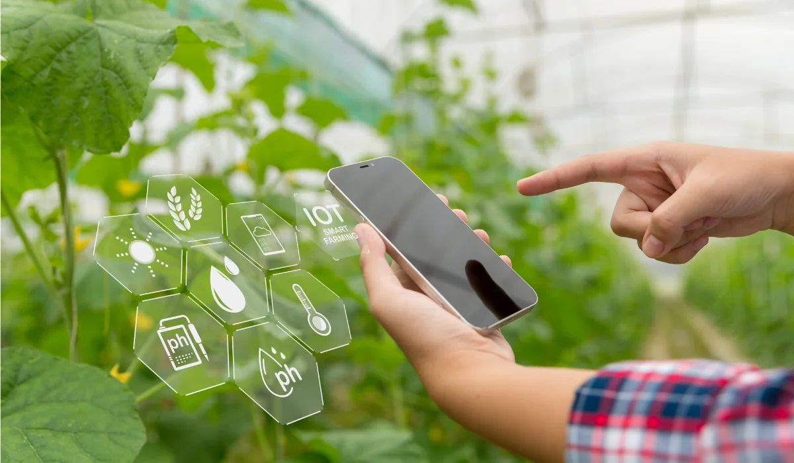
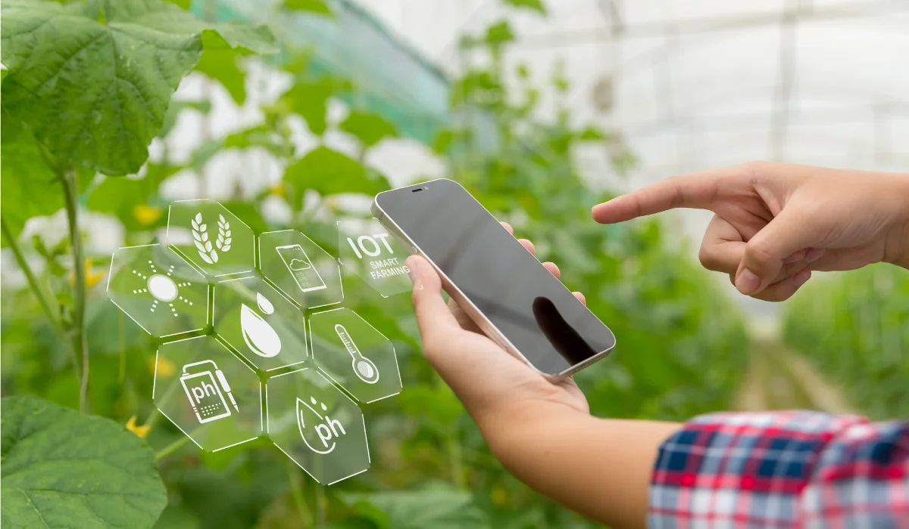

Farm Water Mangement . Improved Efficency
Water Conservation:
By using real-time data, farmers can avoid over-irrigation and ensure that crops get just the right amount of water. This leads to significant water savings.
Efficient irrigation methods like drip irrigation ensure water is delivered directly to where it’s needed.
Energy Efficiency:
Automated irrigation systems reduce the energy costs associated with water pumps and other irrigation equipment by running them only when necessary.
Reduction in Labor Costs:
IoT-based systems automate water management, reducing the need for manual monitoring and operation of irrigation systems.
Improved Crop Yields:
Ensuring optimal water levels for crops at all times leads to healthier plants and higher yields.
Prevents stress on plants due to drought or over-irrigation.
Sustainability:
Helps maintain the long-term health of soil by preventing issues like soil salinization and erosion caused by poor irrigation practices.
Encourages the use of treated wastewater and other sustainable water sources through quality monitoring.
 


 Indian Based | Free Trial | Save Water
Indian Based | Free Trial | Save Water